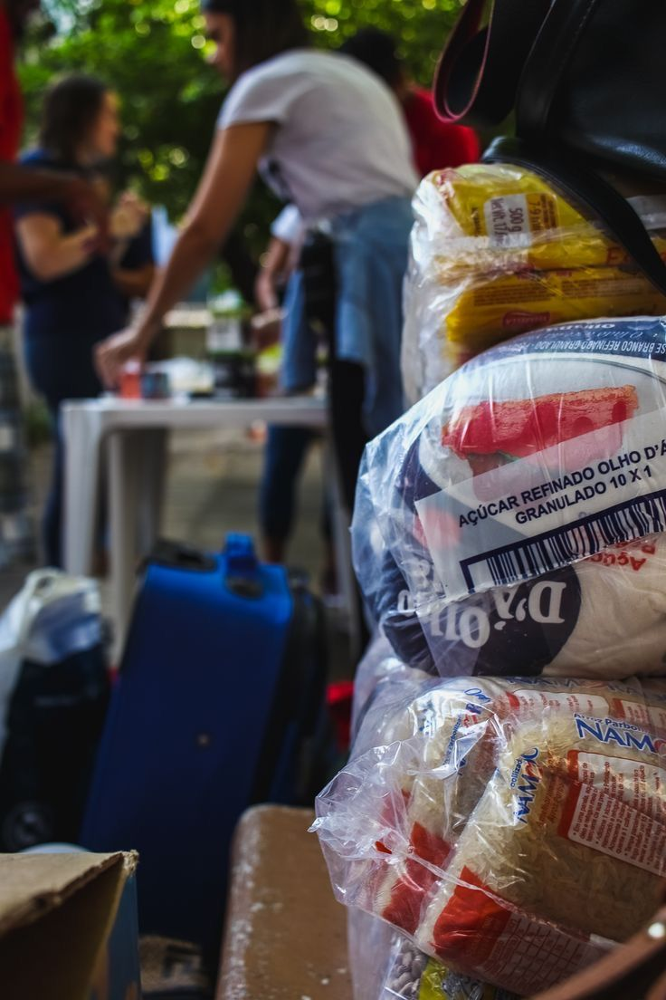
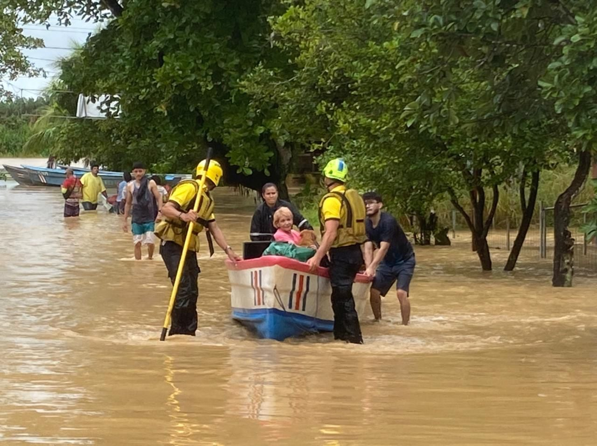
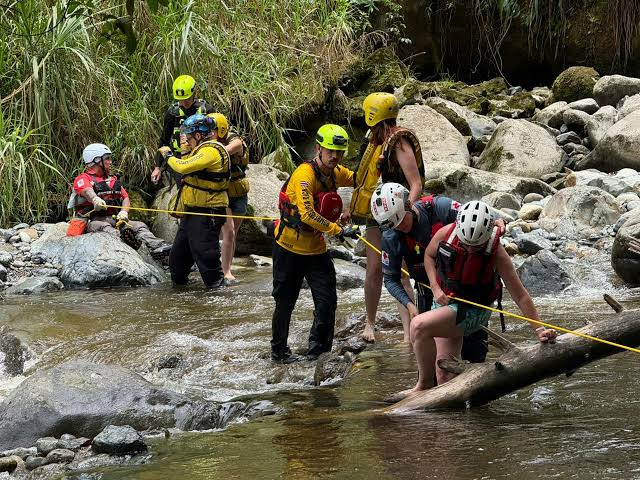
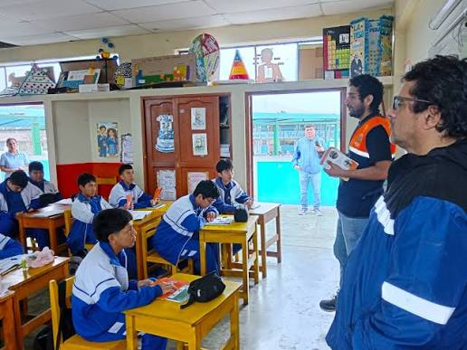

Actividades realizadas por nosotros
Trabajos donde gotcha! ha aportado su ayuda

Ayuda de recursos en zonas indigenas
Se realizo una donacion de productos de primera necesidad en la zona de Turrialba

Aporte de ayuda en inundacion
Personal voluntario ayudo a las personas a salir de sus hogares danmificados en la zona de Matina

Se realizaron soportes de ayuda en lluvias
Se ayudo a transportar personas lejos de un rio caudaloso crecido por la lluvia en la zona de Atenas

Charla sobre que hacer en caso de sismo
Se realizo una capatacion a una escuela donde se enseño las precauciones que se deben tener en caso de un sismo en la zona de Liberia
Preguntas Frecuentes
¿Cuales son las dudas mas comunes con respecto a la organizacion y la manera en lan que operamos? A continuacion, se abordan las preguntas mas comunes realizadas a nosotros.
En el año 2016.
El servicio de donacion y voluntariado en totalmente gratis.
Al trabajar mediante el modelo de freelance, la organizacion cuenta con personal alrededor de todo el pais.
En caso de una emergencia totalmente inesperada, se puede llamar al 2512 4567.
Contamos con personal disponible 24/7, la respuesta de nuestro servicio procura ser inmediata y eficaz. Se responde en menos de 10 minutos a la solicitud.
Ayuda de personal en emergencias, equipo de rescate, refugios, capacitaciones, donaciones de material, transporte en zonas remotas.